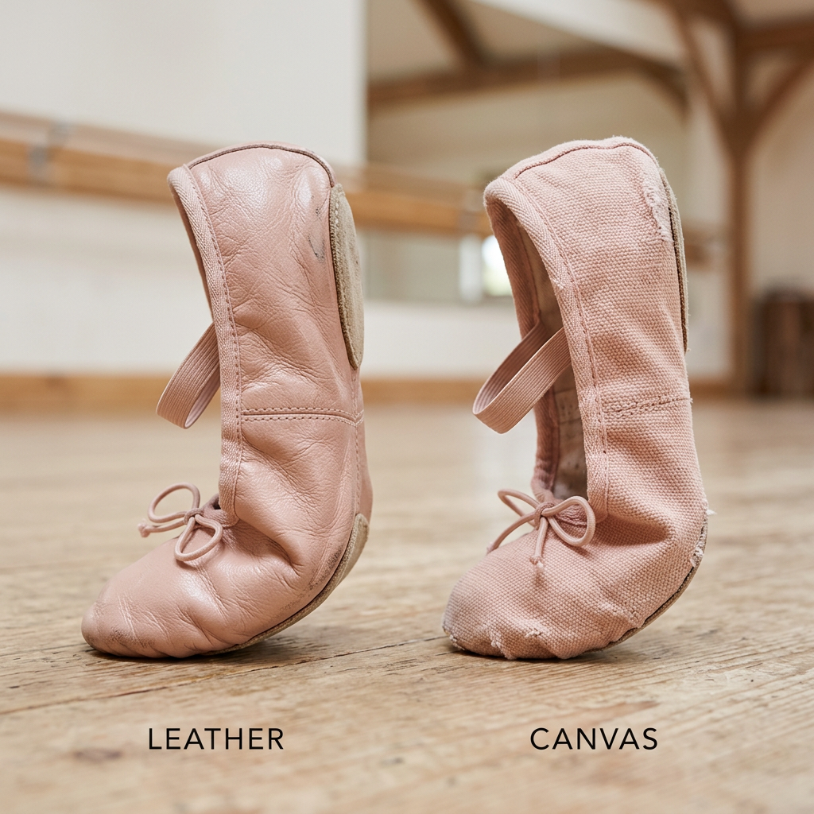
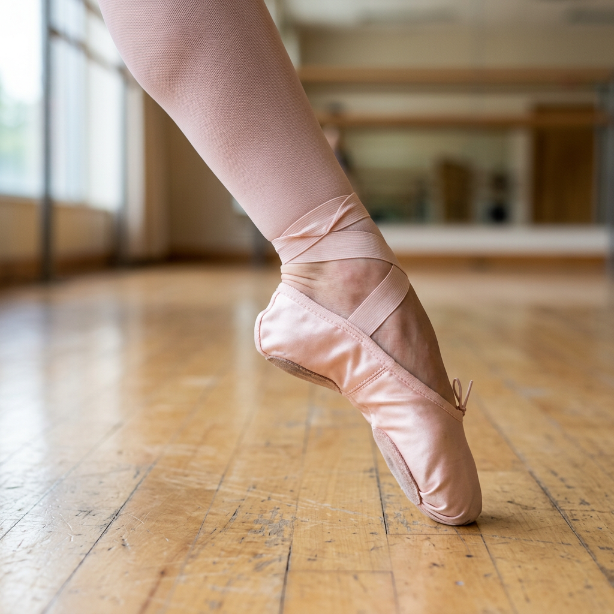

Finding Your Perfect Fit: The Ultimate Buyer’s Guide to Professional Ballet Shoes
The High Cost of the Wrong Ballet Shoe
The thin layer of material between your foot and the studio floor is the most critical piece of equipment a dancer owns. For a high-intent buyer, the search for ballet shoes isn't just about aesthetics; it is about finding a tool that enhances technique, prevents injury, and survives the rigors of daily practice. Choosing the wrong shoe can lead to more than just discomfort—it can cause improper alignment, blisters, and even long-term metatarsal damage.
Whether you are a professional preparing for a new season or a dedicated student looking to upgrade your gear, understanding the nuances of construction, material, and fit is essential. This guide breaks down the science of the ballet shoe to ensure your next purchase is an investment in your dancing future.
Leather vs. Canvas: Choosing Your Material
One of the first decisions you will face is the material of the upper. This choice significantly impacts the shoe's longevity and how it highlights your foot's line.
Leather Ballet Shoes
Leather is the traditional choice for a reason. It is exceptionally durable and offers a natural resistance that helps build foot strength. Over time, leather molds to the unique shape of your foot, creating a custom-like fit. Many teachers recommend leather for beginners because the extra resistance forces the dancer to work harder through their tendu and degagé.
- Pros: Long-lasting, molds to the foot, provides excellent floor feel and resistance.
- Cons: Can feel hot, takes longer to 'break in,' and is generally more expensive.
Canvas Ballet Shoes
Canvas has become the modern standard for many professional dancers. Because canvas is thinner, it allows for a closer look at the foot's articulation and is often preferred for its ability to show off a high arch. Most canvas shoes are machine washable, making them easier to keep clean.
- Pros: Breathable, usually pre-shrunk, highlights the foot's line, and easy to clean.
- Cons: Wears out faster than leather, provides less resistance for strength building.

The Sole Decision: Full Sole vs. Split Sole
The construction of the outsole dictates how much support you receive versus how much flexibility you can achieve.
Full Sole
A full sole runs the entire length of the shoe. It provides maximum resistance under the arch, which is vital for building the intrinsic muscles of the foot. This is why full soles are almost universally recommended for young dancers and those focusing on foundational strength.
Split Sole
A split sole features a patch of suede under the ball of the foot and another under the heel, with the arch left bare. This design allows the shoe to hug the arch perfectly when the foot is pointed, creating a beautiful, unbroken aesthetic line. Most advanced and professional dancers prefer split soles for the freedom of movement they provide during complex allegro work.
Achieving the 'Second Skin' Fit
In ballet, there is no such thing as 'room to grow.' A shoe that is too large will cause the foot to slide, leading to friction burns and a lack of stability. Conversely, a shoe that is too small will curl the toes, preventing proper articulation and causing pain.
To find the perfect fit, follow these expert criteria:
- The Pinch Test: When standing flat, you should be able to pinch a tiny bit of material at the top of the heel. If you can grab a handful, they are too long. If you can't grab any, they may be too tight.
- Toe Alignment: Your toes should lie flat inside the shoe. If they are 'clawing' or overlapping, the shoe is too narrow or too short.
- The Plié Test: Perform a deep grand plié. If the back of the shoe digs painfully into your Achilles tendon, the elastic or the shoe itself is too tight.

Ribbons and Elastics: The Final Security
Most modern ballet shoes come with pre-sewn elastics, but many professionals prefer to sew their own to ensure perfect placement. For maximum security, elastics should be placed at the narrowest part of the ankle to prevent the heel from slipping off during vigorous movements.
If you are choosing ribbons (usually for exams or performances), ensure they are made of high-quality satin or nylon. The goal is a secure fit that supports the ankle without restricting the movement of the tendon.
Expert Verdict: What Should You Buy?
Your choice ultimately depends on your current goals. If you are focused on strength and durability, a leather, full-sole shoe is your best ally. It will challenge your feet and last through months of grueling rehearsals.
If you are focused on aesthetics and performance, a canvas, split-sole shoe will provide the sleek, professional look that judges and audiences admire. Regardless of your choice, remember that the best shoe is the one that feels like a natural extension of your body, allowing you to forget your feet and focus entirely on your artistry.